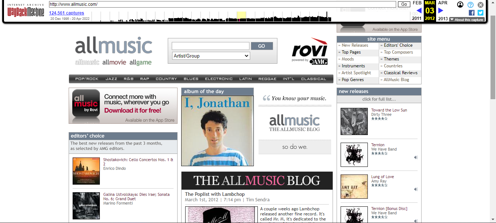
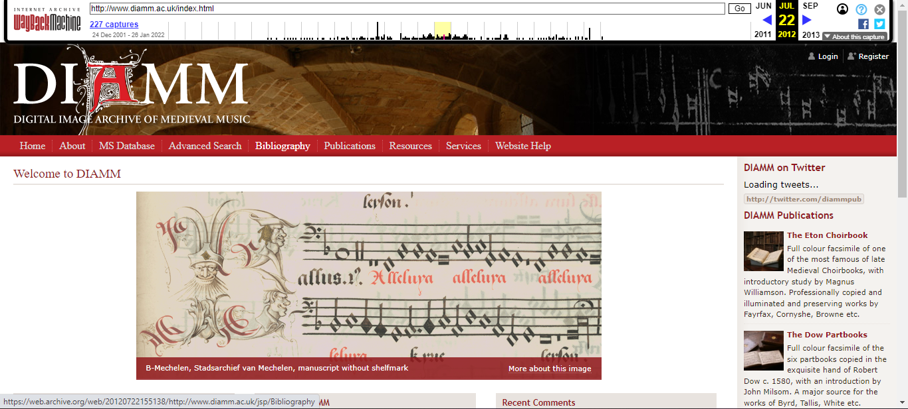
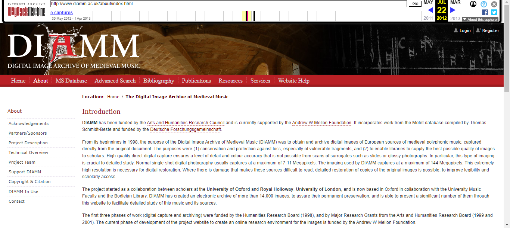
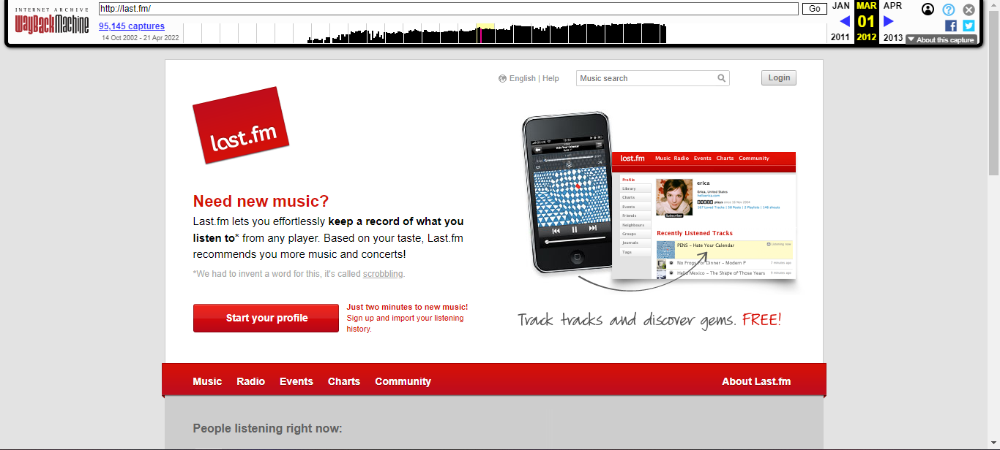
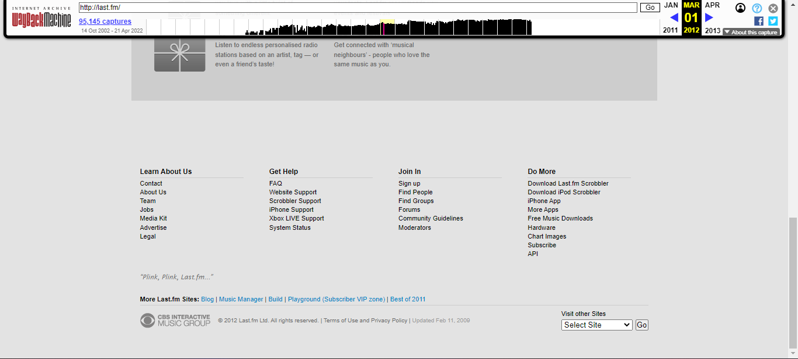
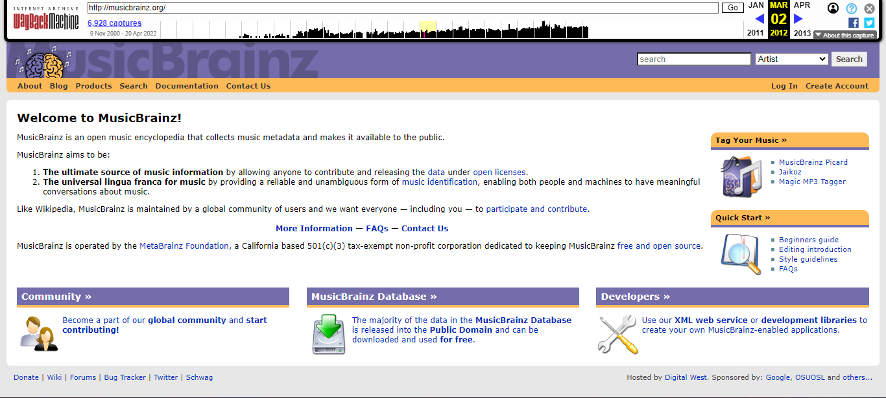
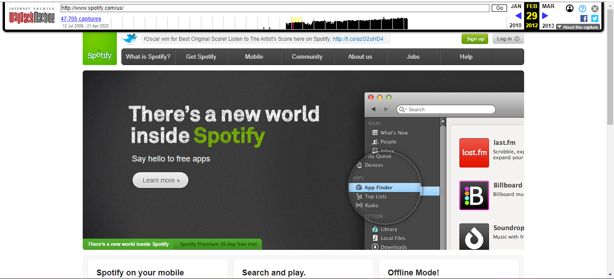

Web 2.0 and responsive web design evolved web design into the modern era we are still seeing today. With the launch of the iPhone in 2007, websites were no longer being perused on just computers or laptops, but now on phones. Websites now had to become mobile-friendly, and soon, tablet friendly. Responsive web design led to another web design trend, known as flat design. Embracing minimalist, two-dimensional design, websites have adopted simpler color palettes and have adopted UX design strategies to keep users engaged on a website.

Aside from some minor column size tweaks, AllMusic's website in 2012 is practically the same as 6 years before. Now, the album of the day is bigger and is advertised along with AllMusic's slogan. Another change is ad placement for AllMusic's app. In a mobile-focused world, advertising is a clear indication of AllMusic's adaptation to comply with new trends.

DIAMM's 2012 website builds on the design trends of the 2006 website. The front page continues to focus on explaining the project, with the long list of text from before now broken up into logical columns. The navigation bar now resides at the top, and the reordering of navigation labels, and also changing of labels showcase the adaptability of DIAMM's online presence to user needs.

When navigating to a subpage, we still see that DIAMM is utilizing inner links to further navigate those sub-pages. Links like these can be useful, but only if the user knows that they are there, so a user would still have to blindly pick a global navigation label in order to find the corresponding sub-label they would need.

Last.fm's 2006 design was minimal for the time, and the 2012 design further embraced minimalism and white space. Last.fm put all the information a new user would need directly in front of them as soon as the website would load. The rest of the front page further reinforces Last.fm's popularity and usability, with the updating People listening right now block showcasing how people all over the world were using Last.fm.

Here, we see the adoption of a trend still used today, known as the fat footer. The fat footer acts as secondary navigation, with links to areas on the site an ordinary user might not need to immediately look for. For websites like Last.FM, which focuses on providing the user's with a service vs providing them with information, a fat footer is an excellent way to still have links to important information without overwhelming the users who have no reasons to navigate there.

With branding more prevalent and the disappearance of the sidebar, MusicBrainz's website is slowly starting to modernize. Still utilizing a drop-down link menu, MusicBrainz's website still looks like something you would see on the first page of a forum but manages to provide its users with the information they may need.

Now in the business for 6 years and becoming more and more of a household name, the 2012 Spotify website begins to show the push into minimalistic web design that will be heavily featured in the 2018 and 2022 versions of the website. Still using neon green as its main branding color, Spotify's 2012 design utilizes negative space and imaging that is eye-catching and supports the content, instead of distracting from it. Spotify also utilizes its quick links section as a fat footer, but instead of featuring links that are different from their global navigation, as most fat footers would, the quick links correspond to the global navigation and reinforce that information.